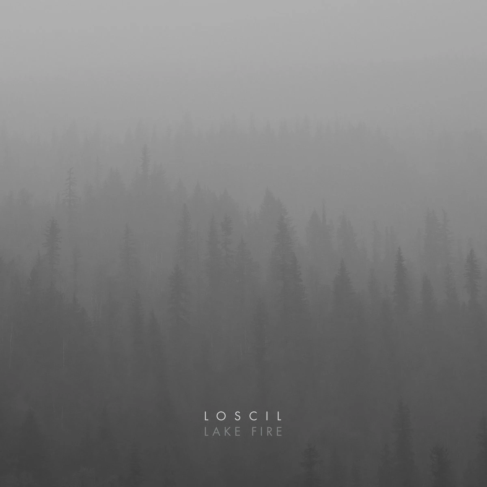

loscil — Lake Fire
The latest album by loscil, Lake Fire, was released on May 2, 2025, and I finally took the time to listen to it. For a good reason. Because who could be more fitting for the very first post on this blog?
Scott Morgan, aka loscil, is a major inspiration to me. I discovered him around the time of Sea Island, which, for me, set the benchmark for all his later releases. With every new album, I hoped it would sound like this.
Thank God not every album sounded the same. Instead, he evolved and enriched his style without losing what was already great. Lake Fire is no exception. It sounds familiar, yet different. More vivid, somehow faster. The sound design is more complex, and at the same time surprisingly melodic (e.g. in “Candling”). It might even be a bit more synth-driven than usual. And the signature elements of electronic music (like gating or these rhythmic bass lines), which he has masterfully integrated into ambient music without it sounding overtly electronic, are also more prominent than before (e.g. in “Silos”).
The middle of the album briefly breaks this flow with “Spark” and “Ash Clouds”, which are noticeably softer and slower. “Ash Clouds” in particular really captivated me, and the slightly later track “Doux” carries a beautiful, subtle mood. That creates a transition to the title track “Lake Fire”, which, at over seven minutes and with its extended soundscapes, stands out on the album.